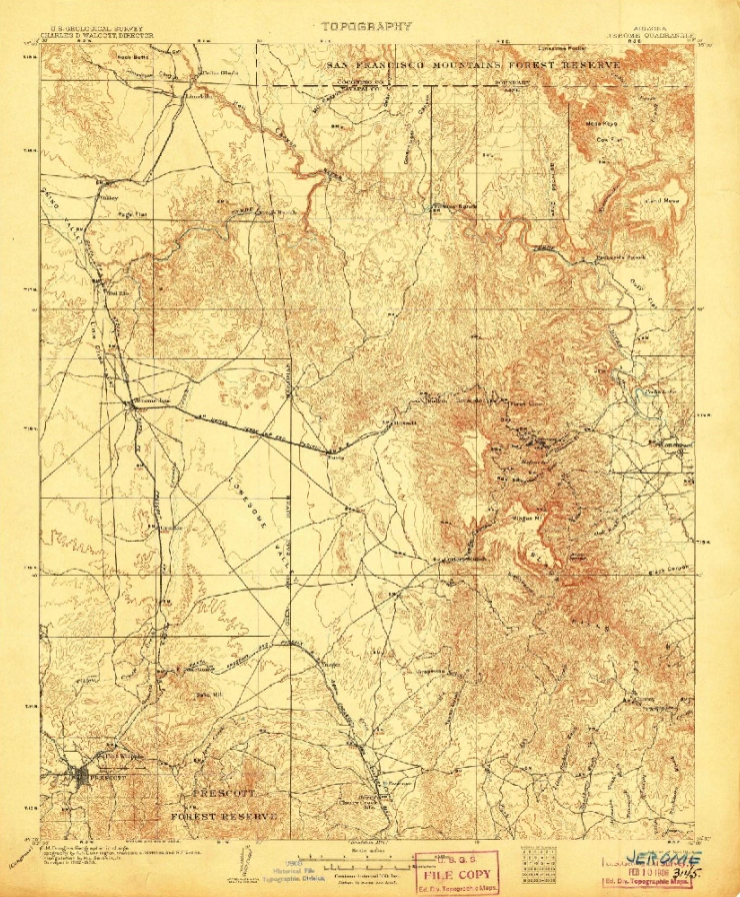

Investigate the Town
Search abandoned buildings, historical sites, hidden passages, records, artifacts, and supernatural evidence.
A Haunted Echoes Studios Concept
A cooperative mystery-horror experience set in a haunted Arizona mining town where every investigation changes what waits in the dark.
Players join a nighttime ghost tour, investigate a selection of abandoned and historic locations, uncover conflicting stories, assemble pieces of a mysterious talisman, and attempt to survive until dawn.

Project Overview
The project combines atmospheric exploration, cooperative decision-making, folklore, puzzles, randomized clues, supernatural threats, and multiple endings.
Search abandoned buildings, historical sites, hidden passages, records, artifacts, and supernatural evidence.
Conflicting accounts force players to decide which stories, witnesses, clues, and warnings can be trusted.
Players race against the night while possession, deception, isolation, and supernatural enemies change the investigation.
The Opening
A visiting professor arrives in an isolated Arizona town for a conference and joins a nighttime ghost tour with the other players.
What begins as local folklore quickly becomes a genuine supernatural emergency. The tour guide appears to know more about the town than they are willing to reveal, and early decisions quietly influence later allies, enemies, locations, and endings.
Records have been altered. Witnesses disagree. Some spirits appear helpful, while others imitate familiar voices to separate players from the group.
Each investigation reveals only part of the truth. The story that players assemble determines which supernatural force ultimately confronts them.
The goal is not simply to identify a ghost. It is to determine what happened, who caused it, and whether the town can still be saved.
Historical Reference
The town setting draws inspiration from Jerome’s mountainous layout, mining-era character, and isolated hillside atmosphere.

Investigation Locations
Every location contains a different piece of the town’s history. Choosing one location means leaving another unexplored until a future playthrough.
Guest ledgers, locked rooms, service corridors, and accounts of visitors who were never seen leaving.
Identity DistortionCollapsed tunnels, abandoned equipment, hidden chambers, and evidence that the official mining disaster report may be false.
IsolationNewspaper archives, missing books, coded notes, altered maps, and records that contradict the museum’s version of events.
False RecordsA once-popular gathering place where local rumors, family histories, and unfinished conversations still echo after closing.
Voice MimicryClass photographs, sealed offices, missing student records, and a recurring bell that rings with no power connected.
Group SeparationMedical files, abandoned treatment rooms, hidden experiments, and patients who may never have existed officially.
PossessionConfessions, ceremonial objects, underground chambers, and evidence of an attempted ritual that was never completed.
Spiritual DeceptionPreserved artifacts, public exhibits, private collections, and a carefully constructed version of the town’s past.
Cursed ArtifactsInvestigation Structure
The team cannot uncover everything in one night. Players must decide which leads matter most and whether to remain together or split into smaller investigation groups.
Establish the initial theory.
Confirm or contradict the evidence.
Reveal the deeper supernatural threat.
Complete the talisman and prepare.
The night advances whether the team is ready or not. Delays, wrong turns, injuries, possession, and missing players consume valuable time.
Supernatural Systems
Paranormal encounters are designed to create doubt without relying only on scripted jump scares.
Each chosen location may reveal a talisman fragment, ritual component, or piece of knowledge required for the final encounter.
The completed talisman may behave differently depending on which pieces were recovered and how the team interpreted them.
Evidence, witness accounts, room access, and supernatural activity can change between playthroughs.
Players must build conclusions from the current investigation rather than memorizing one fixed solution.
A player may become influenced or possessed without the rest of the group immediately knowing.
Possession can change available actions, information, dialogue, objectives, and the possessed player’s personal ending.
Supernatural entities can imitate teammates, witnesses, tour participants, or trusted characters.
Players may hear familiar voices from the wrong room, receive false instructions, or follow an imitation away from the group.
Player Structure
The core mystery is planned to support one player or a cooperative team of up to four investigators.
A four-player limit creates a more focused team structure, reduces multiplayer complexity, and makes possession, private clues, voice mimicry, and split-location investigations easier to balance.
Outcomes and Replayability
No single investigation reveals the entire story. Location choices, recovered clues, surviving characters, trust decisions, and possession outcomes all contribute to the finale.
Each player may receive a different outcome based on personal decisions, supernatural exposure, hidden objectives, and survival.
The team receives a shared ending based on the final theory, completed talisman, surviving allies, and the entity confronted.
The final supernatural enemy can change according to the locations explored and the conclusions reached during the night.
Design Philosophy
The project is intended to build fear through uncertainty, isolation, conflicting evidence, environmental storytelling, and the possibility that a trusted voice is not real.
Major creative influences include mystery-driven exploration, psychological horror, supernatural photography, cinematic adventure games, and cooperative survival experiences.
The project is currently in concept development and pre-production planning. Features shown on this page represent the intended direction and may evolve during prototyping.
The planned technical direction uses Unity for atmospheric environments, multiplayer systems, cinematic storytelling, and supernatural gameplay.
Early prototypes will focus on the historic hotel, four-player cooperative architecture, clue randomization, photography mechanics, environmental tension, voice mimicry, and a limited possession system.

Haunted Echoes Studios
Haunted Echoes Studios develops original interactive projects involving mystery, folklore, horror, history, simulation, and meaningful player choice.
The Arizona Paranormal Project represents the studio’s larger creative direction: atmospheric worlds, layered mysteries, cooperative tension, and stories that change according to how players investigate them.
Visit Haunted Echoes Studios View Ghostline Chess